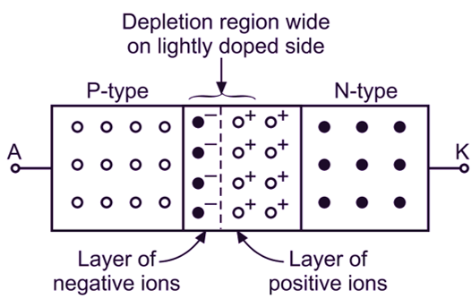
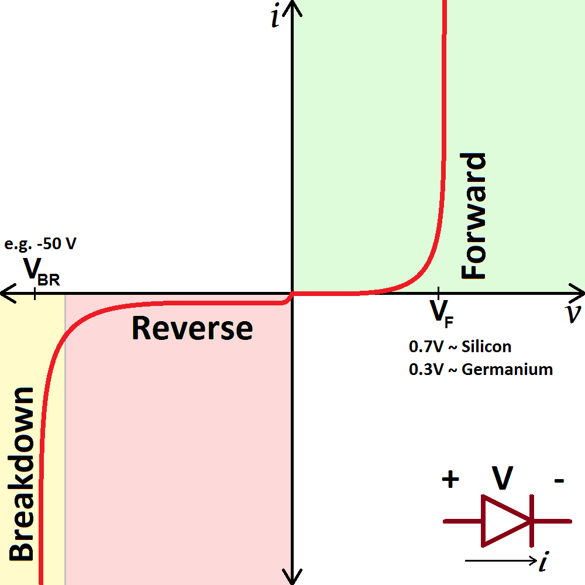
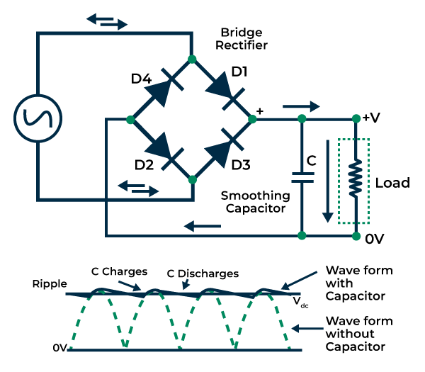

Diodes are essential nonlinear semiconductor devices used to control the direction of current flow. They’re everywhere: from rectifiers in chargers, to logic clamping in microcontrollers, to protection circuits in power supplies. This section goes beyond the surface — helping you *truly understand* diode physics, types, design calculations, and real-world engineering usage.
🧠 Physics of the PN Junction
A diode is formed from a junction of p-type and n-type semiconductor materials. In equilibrium:
Electrons diffuse from N to P, and holes from P to N.
This forms a depletion region with an electric field that opposes further movement.
There is a built-in potential (≈0.6–0.7V for silicon).

Forward bias reduces the barrier → current flows. Reverse bias increases the barrier → negligible current.
📊 V-I Characteristics
The diode current–voltage relationship is exponential in forward bias and nearly flat in reverse bias until breakdown. The ideal diode equation is:
I = I₀ (e^(qV/kT) - 1)
Threshold voltage: ≈0.7V for silicon, 0.3V for germanium.
Reverse saturation current: Tiny leakage when reverse biased.

🌐 Diode Types
PN Junction Diode: Basic form for rectification and protection.
Zener Diode: Allows reverse breakdown, used for voltage regulation.
Schottky Diode: Low forward drop (≈0.2V), fast switching.
LED: Emits light when forward biased (bandgap defines color).
Photodiode: Generates current in response to light.
Varactor: Variable capacitance under reverse bias (used in RF).
🔁 Diodes in Rectifier Circuits
Used for AC to DC conversion. Configurations include:
Half-Wave: Single diode blocks half of the AC cycle.
Full-Wave: Two diodes + center tap OR four diodes in a bridge.

Example: A full-wave bridge rectifier with 10Vrms AC input. Find peak output and average DC output.
Vpeak = √2 × 10V = 14.14V VDC ≈ (2Vpeak / π) - 2×0.7V ≈ 8.3V
🧭 Animated Current Flow (Forward Bias)
🛠 Practical Applications
Power rectification and DC supplies
Overvoltage clamping (Zener or TVS)
Logic signal protection
Reverse polarity protection
Voltage regulation
Indicator lights and sensors (LEDs, photodiodes)
📝 Practice Quiz
What voltage does a silicon diode typically start conducting?
Answer: ~0.7V
In a bridge rectifier, how many diodes conduct per half-cycle?
Answer: Two
Why are Schottky diodes useful in switching circuits?
Answer: They switch faster and have lower forward voltage (~0.2V)